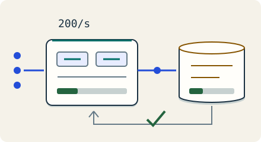

Lead the design · 7 minutes
The simplest thing that works
Include people, failure recovery and future triggers in the cost of a design.
Open this lesson
Six services for a quiet product
A team with four engineers proposes six services and a sharded database for a product serving 200 requests/s. Each service needs deployment, dashboards, contracts and someone to answer its pages. The diagram scales on paper, but the team is now the scarce resource. Simplicity means the fewest moving parts that meet the actual requirements, with a path to change.
Put build and buy on the same horizon
Move load, growth and team size over three years. Compare costs under explicit assumptions and observe the capacity and ownership triggers. A cost worksheet cannot decide a business requirement for you.
Worked example: three years
Assume loaded engineering cost of $180,000 per engineer-year. Building needs 0.5 in year one and 0.2 in each later year. Buying needs 0.1 for integration plus 0.05 per year for operations. The comparison changes if staffing, fees, recovery or exit costs change. This is a sensitivity exercise, not catalog pricing.
Compare the same three years
- Build: $234,000: 0.9 engineer-years costs $162,000. Infrastructure adds $72,000.
- Buy: $189,000: Service fees cost $144,000. Integration and operations add $45,000.
- Change one assumption: A 50% fee rise over all 36 months adds $72,000 and reverses this result.
A plan with triggers
Move the migration start and verification time. Finish before forecast writes or measured restore time reaches its tested ceiling. Keep backups, authorization and a rollback path from month one; add complexity when evidence calls for it.
Key numbers
- Build total
- ≈ $234,000 / 3 years. $162,000 people + $72,000 infrastructure
- Buy total
- ≈ $189,000 / 3 years. $144,000 service + $45,000 people
- Price sensitivity
- ≈ $72,000 extra. 50% of $4,000/month × 36 months
Check your reasoning
Think through these questions before opening the lesson. In the game you can test the idea and compare your reasoning.
- A managed service costs twice the raw VMs. What is needed before comparing build and buy?
- Your design seems too simple for year two. Follow-up: traffic grows tenfold.
- One store meets tested peak and recovery targets. Which evidence most directly justifies planning a shard migration?
- Buying is cheaper in your table. Why might we still build? Follow-up: who owns it after launch?
- A single service has backups but has never tested a restore. What is still unproven?
The key point
Choose the smallest design that meets the promise, and attach measured triggers to future complexity.
Practise this idea
- Easy
URL shortener
People paste a long web address and get back a short one. Millions of other people then tap that short link, so reading is almost everything. Keep every tap fast, and never lose a link.
- Easy
Status page
When a big service has a problem, millions of people open its status page to see what is happening. The page must stay up exactly when everything else is down, and it must not share a home with the thing it reports on. A few staff update it by hand.